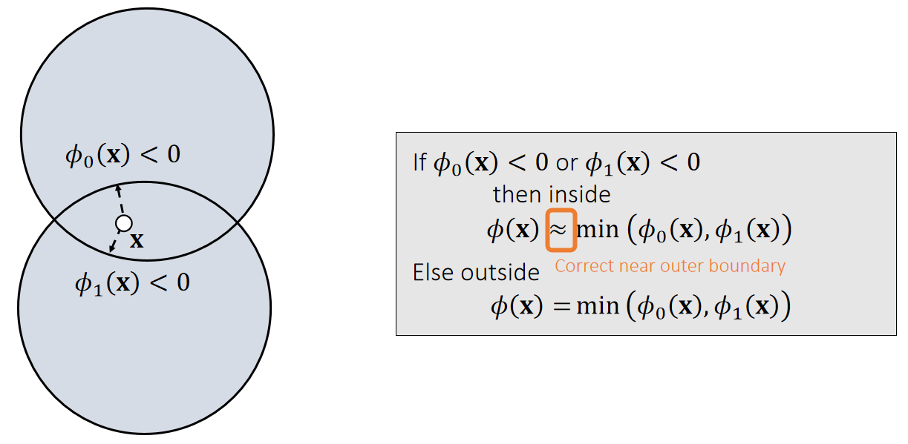

P11
粒子 + SDF
mindmap
粒子SDF仿真
碰撞检测
离散相交检测
连续穿透检测
碰撞响应
相交解除
状态更新
Penalty
Impulse
碰撞检测
P13
离散相交检测
检测粒子是否在 SDF 的内部

If \(\phi _0(\mathbf{x} )<0\) and \(\phi_1(\mathbf{x} )<0\) and \(\phi_2(\mathbf{x} )<0\)
then inside
\(\quad \phi (\mathbf{x} )\)=max \((\phi_0(\mathbf{x}),\phi_1(\mathbf{x}),\phi_2(\mathbf{x}))\)
Else outside
\(\quad \phi (\mathbf{x})=?\)
P14
Union of Signed Distance Functions

✅ 有时候此公式不成立，例如图中\(\mathbf{x}\) 点
Intuitively, we can consider collision detection with the union of two objects as collision detection with two separate objects.
P15
穿透检测
$$ \phi (x(t))=0 $$
解出 \(t\)
如果 \(t\) 在所检测的时间范围内有解，则说明存在穿透 \(t\) 为穿透时刻。
粒子碰撞响应
SDF 常用于代表静态物体，这种物体不响应力和碰撞，所以所有的碰撞响应都发生在粒子上。
碰撞解除
碰撞解除是将粒子移到不发生碰撞的位置上。

✅ 更新方向：N方向。更新距离：穿入的距离。即把粒子移动到离它最近的 SDF 的表面上。
✅ 这种解法非常简单，但存在不合理的情况，考虑以场景：粒子从 \(t_k\) 移动到 \(t_{k+1}\)，此时检测到了相交。这种情况下，粒子应退回到发生穿遂时刻的Ⓐ处，而不是离它最近的Ⓑ处。

状态更新
状态更新是更新粒子的速度，使其表现出碰撞后反弹的效果。
Penalty Method
Quadratic Penalty Method
A penalty method applies a penalty force in the next update. When the penalty potential is quadratic, the force is linear.

当粒子进入物体内部后，就会产生一个向外的推力。力的大小与距离有关，方向为normal.粒子的状态由下一步仿真更新。
P16
✅ 粒子的运动状态发生变化确实是由于力的作用。但对力的大小的假设不合理。
✅ 力的大小确实与穿透深度有关，因为：
✅ 穿透深 → 相对速度大 → 碰撞速度和反弹速度都大 → 速度改变大 → 力大
✅ 力的大小与碰撞深度只是间接的正相交，没有直接的必然性。因此把它们的关系假设为正比关系是不合理的。
✅ 存在的问题：只有\(\mathbf{x}\) 进入 mesh 内部了，才会有力，但此时穿透的 artifacts 已经产生了。解决方法：使用buffer
Quadratic Penalty Method with a Buffer
A buffer helps lessen the penetration issue. But it cannot strictly prevent penetration, no matter how large \(k\) is.


✅ 存在的问题：
✅ 如果 \(k\) 太小，快速的碰撞仍会产生 artifacts
✅ 如果 \(k\) 太大，碰撞的反弹过于强烈(overshooting)
✅ 解决方法：不用常数 \(k\) ，而是 \(k\) 与距离相关
P17
Log-Barrier Penalty Method
A log-barrier penalty potential ensures that the force can be large enough. But it assumes \(\phi (\mathbf{x} ) < 0\) will never happen!!! To achieve that, it needs to adjust \(\Delta t\).
✅ 用倒数关系代替线性关系。
✅ 存在的问题：
1.当\(\mathbf{x}\) 靠近物体表面时，仍然会 overshooting
2.\(\mathbf{x}\) 穿透表面后，会越陷越深。
3.本算法如果要求保证穿透永远不会发生，因此要仔细调节 \(\Delta t\).
- Log-barrier method can be limited within a buffer as well.
- Li et al. 2020. Incremental Potential Contact: Intersection- and Inversion-free Large Deformation Dynamics. TOG.
- Wu et al. 2020. A Safe and Fast Repulsion Method for GPU-based Cloth Self Collisions. TOG.
P18
A Short Summary of Penalty Methods
-
The use of step size adjustment is a must.
- To avoid overshooting.
- To avoid penetration in log-barrier methods.
-
Frictional contacts are difficult to handle.
✅ 缺点：
(1) 难以模拟摩擦。
(2) 这种方法一开始所建立的假设基础就是不合理的。再怎么修补也难以避免其 artifacts.
优点：易实现
P19
Impulse Method
An impulse method assumes that collision changes the position and the velocity all of sudden.
✅ Penalty 方法是碰撞 → 力 → 下一时刻的速度和位置，效果滞后。
✅ lmpulse 省去了力这一步，立即直接更新刚体状态。
✅ 这不是这两种方法的关键区别，关键区别在于对状态变化规则的假设。
P20
✅ \(\mathbf{v}\cdot \mathbf{N}\ge 0\)：当前速度想要让物体越陷越深, 这种情况下才需要更新速度

✅ 把\(\mathbf{v}\)分解为\(\mathbf{v_T}\)（切线方向的速度）和\(\mathbf{v_N}\)（法线方向的速度）.
✅ \(\mathbf{v_N}\)方向速度反弹， \(\mu _\mathbf{N}\) 为反弹系数。\(\mathbf{v_N}\)方向不变或由于摩擦而衰减
✅ a的约束：（1）越小越好，尽量把速度衰减掉（2）满足库仑定律（切方向的速度改变不应大于法线方向的速度改变）（3）切方向速度不能反转，即a不能为负
Impulse方法总结
✅ 优点：可以精确控制摩擦力和反弹位置。缺点：计算比 Penalty 复杂
✅ 刚体常见于 Impulse； 弹性体常见于Penalty.
| 速度大小 | 速度方向 | |
|---|---|---|
| Penalty | 碰撞深度->力的大小 | 力的方向+原方向 |
| Impulse | 相对速度 * decay | 反弹方向+惯性方向 |
本文出自CaterpillarStudyGroup，转载请注明出处。
https://caterpillarstudygroup.github.io/GAMES103_mdbook/